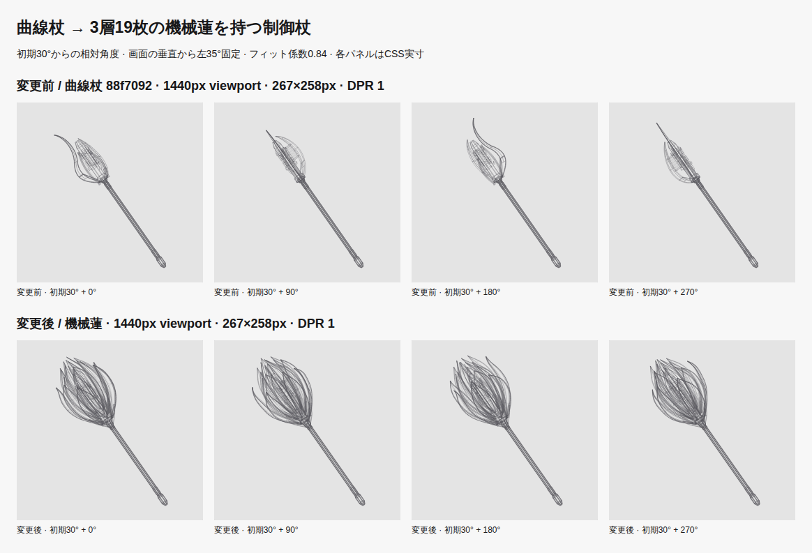
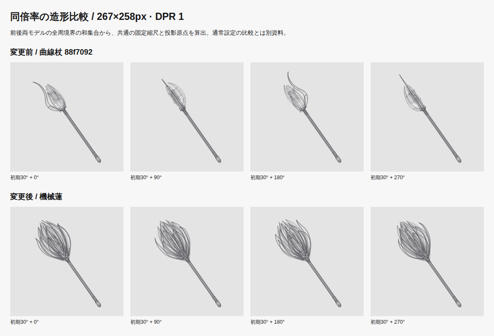
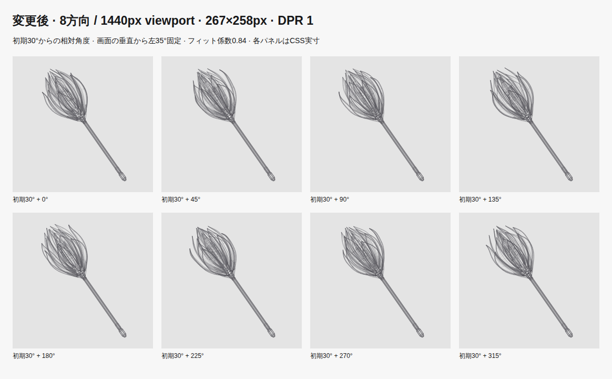
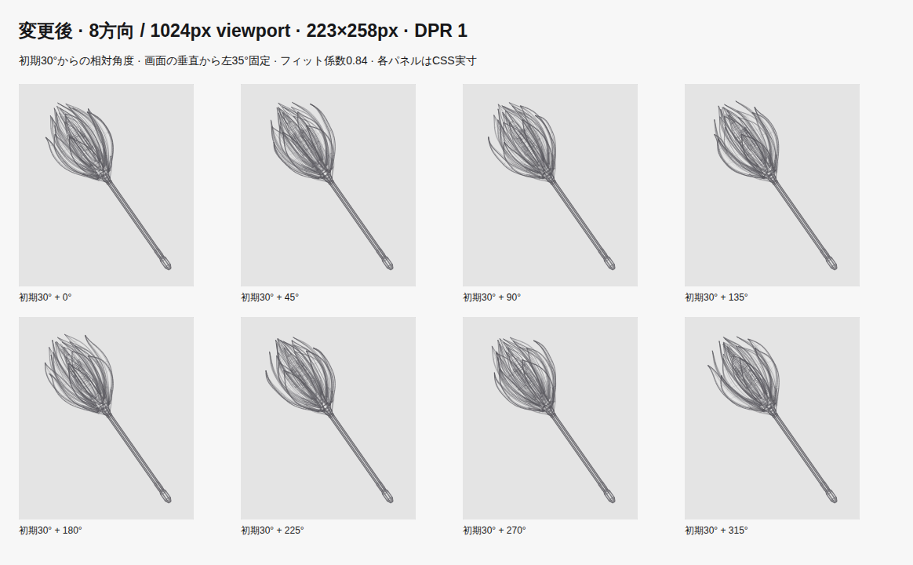
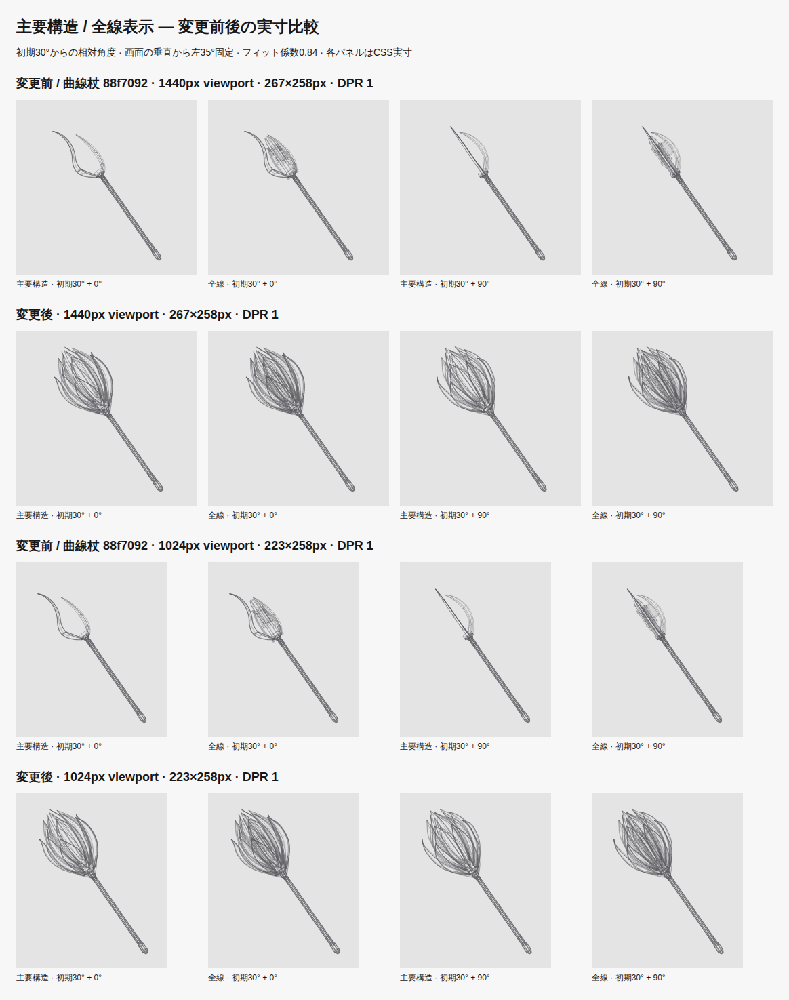
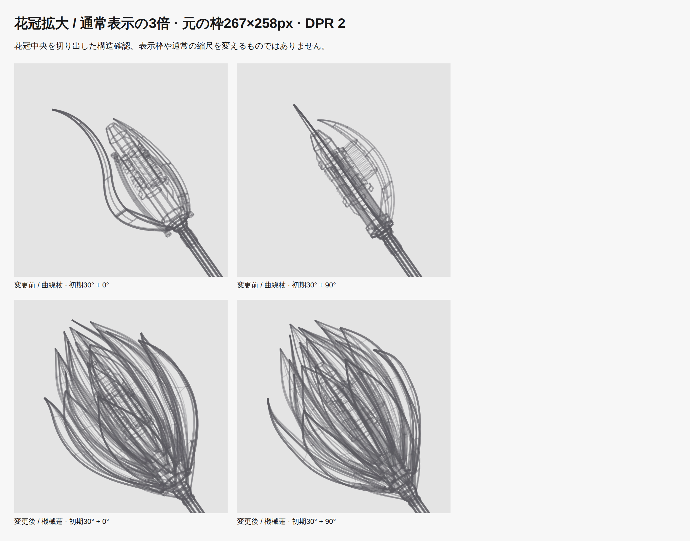
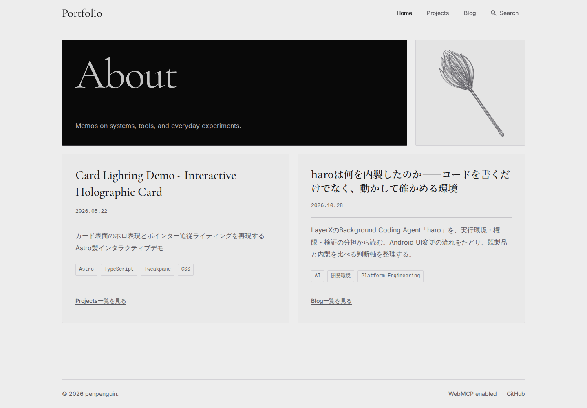

丸みのある幅広の花弁を外6・中8・内5枚で重ね、花冠そのものを先端機構にしました。表裏輪郭・中央稜線・花弁裏の2本のリブ・短い橋・3段のカラー・二股支持・萼6本を組み合わせ、中央の直線レール、多角柱、5本のピン、端子、フィン、配管を残しています。通常サイズでも先端の面積と密度を増し、側面で薄い帯へ戻らない構成です。
全長10を維持。頭部長 3.75 → 4.218、全周最大径 2.123 → 3.123。柄中央の静かな区間は4.02単位。267×258px・初期30度で、軸に直交する花冠幅は43.057 → 76.98 CSS pxです。画面X方向の包絡幅とは区別しています。
左35度、初期30度、16秒／周、約30fps、DPR上限2、フィット係数0.84、全周固定中心・縮尺を維持。通常PC枠の固定縮尺は25.648 → 26.628 CSS px/モデル単位。線幅1.1／0.8／0.5pxと不透明度範囲を維持し、全19枚を主要構造に含めています。塗り面・色・新しいUIは追加していません。
上段が変更前88f7092の曲線杖、下段が機械蓮。各モデルの全周から同じ0.84規則で固定フィットしています。角度ラベルは初期30度からの相対角度です。

両モデルの全周境界の和集合から共通の固定縮尺・投影中心を設定。通常設定での比較とは別です。



標準PC / DPR 2 / 狭いPC / DPR 2 / 変更前の8方向
主要構造にも外・中・内の全19枚、表裏輪郭、中央稜線、支持と柄を含めます。全線ではリブ・橋・中央機構・端子・配線を追加。表示モードは資料作成用で、本番UIにはありません。

同じ比較 / DPR 2 / 主要構造8方向 / 狭いPCの主要構造8方向
通常描画の3倍。実寸確認を補う構造資料です。

| Viewport | 実描画領域 | 変更後 |
|---|---|---|
| 1440px | 267×258px | DPR 1 / DPR 2 |
| 1024px | 223×258px | DPR 1 / DPR 2 |
| 980px | 914×238px | DPR 1 / DPR 2 |
| 768px | 726×238px | DPR 1 / DPR 2 |
| 390px | 348×238px | DPR 1 / DPR 2 |
| 320px | 278×238px | DPR 1 / DPR 2 |
変更前: 1440px / 390px / 320px。前後12条件の枠座標・寸法は一致。Homeの配置・高さ・3:1・ヘッダー・フッター・スクロールを維持しています。

10寸法×360角度で線幅込み最小余白18.952 CSS px。軸上2点による35度誤差は3.552713678800501e-14度。花弁は各ベジェ16分割＋正規化アンカー0.2/0.5/0.8で生成し、128分割参照との最大誤差は0.044 CSS pxでした。3層19枚、厚み・尖端・輪郭の自己交差・接続・共有頂点・重複辺を検証しました。
八角柱の角の中間に来る取付位置は、方位から接続先を決定し、同距離時の丸めを統一しました。NodeとChromiumの全3D辺が一致し、Canvas／SVGの共通経路を保持しています。比較資料の全線描画は、前後×2枠×2 DPR×8角度の64条件で、実際のpreview CanvasとPNGバイト一致しています。
寸法・曲線・全周・SHA256 / Node／Chromiumの辺一致 / 64条件のCanvas一致 / 変更前枠 / 変更後枠
6.18.54.1-microsoft-standard-WSL2 / AMD Ryzen 5 3600 6-Core Processor / Chromium 156.0.8078.4 / Node v26.12.1。各条件で60実描画のウォームアップ後、480実描画を採取。clearRectから最後のstrokeまでの投影＋Canvas描線のCPU時間で、計測処理を含みます。省略rAFやGPU合成時間は含みません。
| 条件 | 中央値 前→後 | p95 前→後 |
|---|---|---|
| 267×258 / DPR 1 | 0.4 → 1.7 ms | 0.7 → 2.4 ms |
| 348×238 / DPR 2 | 0.4 → 1.9 ms | 0.6 → 2.5 ms |
この環境ではp95 8msの目安以内。全端末での保証ではありません。線分1,420 → 6,153、共有頂点1,098 → 5,378。多数の花弁と補強材の追加により、静止SVGを含む配信量は増えています。
| 項目 | 変更前 | 変更後 |
|---|---|---|
| Home HTML / raw | 265,750 B | 1,115,216 B |
| Home HTML / gzip | 25,861 B | 100,997 B |
| 静止SVG / raw | 255,516 B | 1,104,982 B |
| 静止SVG / gzip | 21,645 B | 96,443 B |
npm run check: 97 files; 0 errors, warnings or hintsnpm run lint: passednpm run test -- --run: 53 files; 327 tests passednpm run build: Astro and Pagefind succeededPLAYWRIGHT_EXTERNAL_WEB_SERVER=1 npm run test:visual --
--workers=2: 90 Chromium tests passed against this built preview
Prettier --check changed TypeScript files; git diff --check: passed
停止／再開、クリック・タップ・Enter・Space、停止後のフォーカス移動、Astro往復、reduced-motion変更、画面外・非表示通知、停止中rAFなし、JS無効・Canvas失敗、検索併用、Bento／archive／共通レイアウト／サムネイルを検証。機能テストの削除・skipなし。
Firefox／Safari・実機タッチ・実OSタブ切替・Windowsのテスト起動は未検証。タッチはChromiumエミュレーション、visibilitychangeは合成通知と単体テストです。マージ・公開は行っていません。